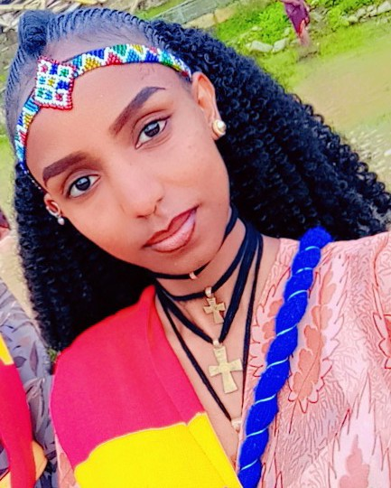

Hello Every one my name is FURTUNA HAGEZOM and I study Computer Scince department 3rd year student in my break time Works chiffon designerwith a love forFashion Designer I Have been working in this field for two years and i continually strive to enhance my skills and knowleges
I born in Adi-Grat in 2001 G.C from my mother Kbra Tekuluand my father Hagezom G/weld from a young age i was always curious and eager to explore the world around me.as a child , i spent countless houres reading books and engaging in creative play,which sparked my imagination and laid the foundation for my love of learning .my early education was filled with supportive teachers who encouraged my interest particularly in IT and computers where i developed an early interest inMekelle Industryal Parkin Tigray War time this passion led me to pursue 2 years experience from MEKELLE INDUSTRIYAL PARK GSCS Chinas company and in this time I am Chiffon DesignerandComputer Scince student
THIS IS ME
I love old Amharic musics e.g